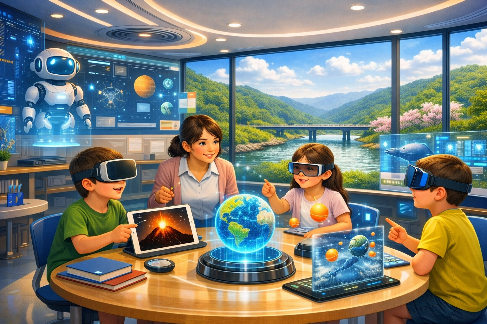

🖋️ あなたの想いやアイデア
幼児教育に関する気づき、課題感を自由に入力してください。
💡
AI思考整理エリア
左側に意見を入力して送信すると、
AIが論点を5つの視点で整理し、タイトルを自動生成します。
📋 5つの視点による論点整理・分析
👑 生成された推奨タイトル
📝 200字要約

🌳 アイデアの地図：AIの提案を、市民の声で磨き上げる
AIが考えた提案に、市民の声をしっかり重ねて、みんなで育てるアイデアの地図。
今いちばん伝えたい提案をリアルタイムでお届けします。
🗺️ 未来提案の原点（アイデアの地図）
データを構築中...
📜 提案集約・共創アップデート案
履歴ログを読み込み中...
🌱 1. 探究心を育む知育環境（主体的な学び）
リアルタイム更新中🤖 AIが導き出した提案
【全体傾向分析】子どもが自分の興味を起点に動ける環境を整えることが重要です。与えられた課題をこなすだけでなく、選ぶ・試す・やり直す経験を積み重ねることで、主体性は自然に育ちます。保育者は正解を先に教える役割ではなく、子どもの発見を支える伴走者として関わる必要があります。遊びの中に小さな選択肢を用意し、友だちとの対話や試行錯誤が生まれる空間をつくることで、学びはより深くなります。さらに、制作や発表、デジタル表現など多様なアウトプットを認めることで、一人ひとりの考えが形になる場を広げられます。
✨ AIの提案に市民の声を加えて、よりよく育てた最終提案（300字）
【全体傾向分析】ここを表示させるには、右上のリアルタイム更新中のボタンをクリックしてください
🎨 2. 学問の楽しさと感性の融合（楽しさと好奇心）
リアルタイム更新中🤖 AIが導き出した提案
【全体傾向分析】楽しさと好奇心は、学びの入口としてとても大切です。子どもは「おもしろい」と感じた瞬間に、もっと知りたい、やってみたいという気持ちを強めます。自然体験、音、色、手触りなど五感を使う活動は、知識の前に発見の喜びを生みます。うまくいかない経験も、失敗として終わらせず、次の挑戦へつなげることで、探究心が育ちます。地域の文化、芸術、季節の行事を日常に取り入れると、遊びと学びの境目が自然に近づきます。楽しい体験が続く環境は、学び続ける姿勢そのものを支えます。
✨ AIの提案に市民の声を加えて、よりよく育てた最終提案（300字）
【全体傾向分析】ここを表示させるには、右上のリアルタイム更新中のボタンをクリックしてください
🤝 3. 逆境を跳ね返すサバイバル能力（未来を生き抜く力）
リアルタイム更新中🤖 AIが導き出した提案
【全体傾向分析】未来を生き抜く力には、知識だけでなく、人と協力する力や気持ちを立て直す力が含まれます。変化が多い時代では、正解を一つ覚えるより、自分で考えて行動を選ぶ力が重要です。遊びの中で役割を分けたり、仲間と話し合ったりする経験は、協働の土台になります。困難に出会った時にすぐにあきらめず、別の方法を試すことが、回復力や柔軟性を育てます。年齢に応じて小さな責任を任せることも、自分でできたという感覚を強めます。安心できる環境の中で挑戦を積み重ねることが、将来の適応力につながります。
✨ AIの提案に市民の声を加えて、よりよく育てた最終提案（300字）
【全体傾向分析】ここを表示させるには、右上のリアルタイム更新中のボタンをクリックしてください
🌳 4. 個性の開花ととことんやり抜く環境（個性・才能の開花）
リアルタイム更新中🤖 AIが導き出した提案
【全体傾向分析】一人ひとりの違いを前提にした支援が、個性・才能の開花には欠かせません。得意なことや関心のあることは子どもによって異なるため、同じ物差しで比べるだけでは力を伸ばしにくくなります。好きな遊びや集中しやすい活動を見つけ、それを深められる時間を確保することが大切です。評価も結果だけで判断せず、過程や工夫、挑戦の様子を見取る視点が必要です。困りごとを抱える子どもには、個別に合った支援を早めに行い、安心して参加できる環境を整えます。多様な子どもが互いを認め合える場は、それぞれの才能を自然に引き出します。
✨ AIの提案に市民の声を加えて、よりよく育てた最終提案（300字）
【全体傾向分析】ここを表示させるには、右上のリアルタイム更新中のボタンをクリックしてください
🌐 5. 切れ目のない支援のつながり（シームレス成長支援）
リアルタイム更新中🤖 AIが導き出した提案
【全体傾向分析】シームレス成長支援とは、保育、教育、家庭、地域を切れ目なくつなぐ考え方です。子どもの成長は園や学校だけで完結しないため、保護者が相談しやすい導線や、必要な支援にすぐつながる仕組みが重要です。入園、進級、小学校接続、家庭復帰などの節目で支援が途切れないことが安心につながります。支援の内容が複数の機関にまたがるほど、情報共有と連携の丁寧さが求められます。困ったときに「誰に相談すればよいか」が明確であることは、利用しやすさに直結します。子どもと家庭の変化に寄り添い続ける体制が、長期的な安心を支えます。
✨ AIの提案に市民の声を加えて、よりよく育てた最終提案（300字）
【全体傾向分析】ここを表示させるには、右上のリアルタイム更新中のボタンをクリックしてください

📥 提案箱
大分類 → 中分類 → 記事の順に開きます。